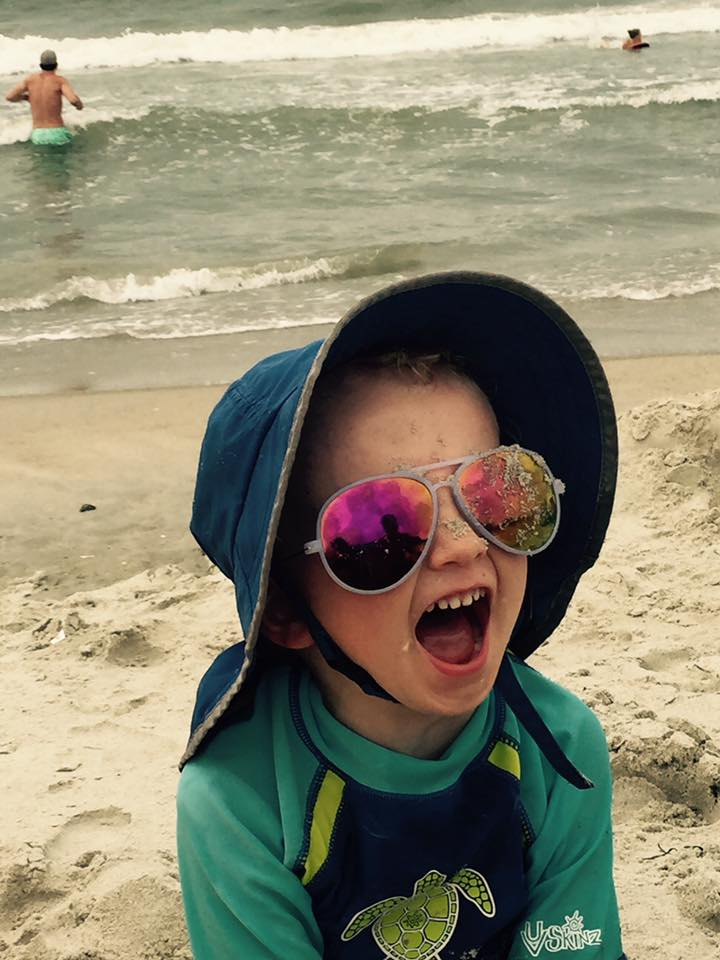

Paxton "Paxtonator" Price, aka. Sir Diggerasaurus
Paxton Elijah Price was born May 14th, 2012. As a four year old, his most favorite things in the world are construction equipment, garbage trucks, cat videos and jamming on the uke .
Paxton's least favorite things in the world are sharing with his sister, having his cuts cleaned and talking about having his cuts cleaned